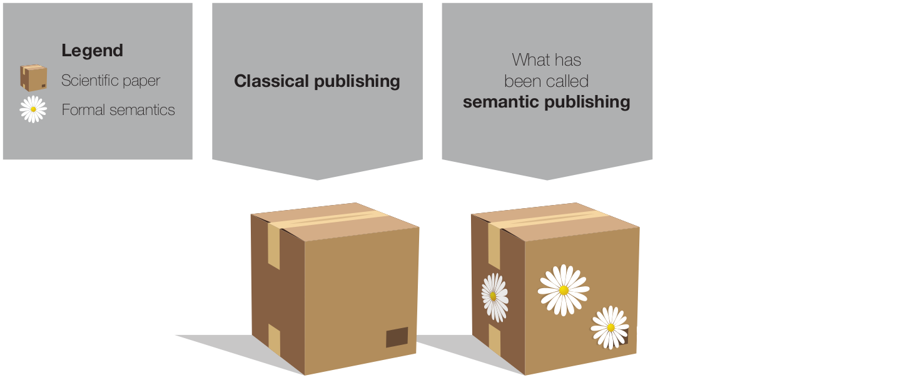

FAIR Data and Semantic Publishing
Tobias Kuhn
Guest Lecture for Introduction Data Science Course
VU Amsterdam
8 October 2018
These Slides: https://tinyurl.com/introds2018fair
Scientific Datasets!
FAIR
The FAIR Guiding Principles:
Scientific datasets should be
- Findable
- Accessible
- Interoperable
- Reusable
Mark Wilkinson et al. The FAIR Guiding Principles for scientific data management and stewardship. Scientific Data, 3(160018), 2016.
Findable
- F1. (meta)data are assigned a globally unique and persistent identifier
- F2. data are described with rich metadata (defined by R1 below)
- F3. metadata clearly and explicitly include the identifier of the data it describes
- F4. (meta)data are registered or indexed in a searchable resource
Accessible
- A1. (meta)data are retrievable by their identifier using a standardized communications protocol
- A1.1. the protocol is open, free, and universally implementable
- A1.2. the protocol allows for an authentication and authorization procedure, where necessary
- A2. metadata are accessible, even when the data are no longer available
Interoperable
- I1. (meta)data use a formal, accessible, shared, and broadly applicable language for knowledge representation.
- I2. (meta)data use vocabularies that follow FAIR principles
- I3. (meta)data include qualified references to other (meta)data
Reusable
- R1. (meta)data are richly described with a plurality of accurate and relevant attributes
- R1.1. (meta)data are released with a clear and accessible data usage license
- R1.2. (meta)data are associated with detailed provenance
- R1.3. (meta)data meet domain-relevant community standards
Scientific Papers and Data
Scientific Papers are Data Too!
Scientific Papers:
Optimized for Reading Single Work

Scientific Papers:
Bad for Getting More General View

Scientific Papers:
Unused Potential of Software/Databases
Automatic Text Mining is Not Good Enough
World-leading text mining on chemical–disease relations:


Manual Text Mining is Slow and Expensive
Around 50 biocurators employed to feed European protein databases:

New Paradigms of Scientific Publishing?

Classical Publishing

Kuhn and Dumontier. Genuine semantic publishing. Data Science, 1(1-2), 2017.
"Semantic Publishing"
Kuhn and Dumontier. Genuine semantic publishing. Data Science, 1(1-2), 2017.
Genuine Semantic Publishing

Kuhn and Dumontier. Genuine semantic publishing. Data Science, 1(1-2), 2017.
A New Paradigm of Scientific Publishing
Nanopublications

Nanopublication Datasets
- Global Biotic Interactions (GloBI): 79 502 nanopublications
- DrugBank via Bio2RDF: 39 268 nanopublications
- Small Kidney Disease Dataset: 1657 nanopublications
- Small Rare Disease Dataset: 4583 nanopublications
- OpenBEL: 74 173 nanopublications in latest version
- Human Protein Atlas (HPA): 1 254 468 nanopublications
- neXtProt: 4 025 981 nanopublications
- GeneRIF/AIDA: 156 026 nanopublications
- DisGeNET: 1 469 541 nanopublications in latest version
- WikiPathways: 17 147 nanopublications in latest version
- LIDDI: 98 085 nanopublications
Overall: 10 803 231 nanopublications
Tobias Kuhn et. al. Nanopublications: A Growing Resource of Provenance-Centric Scientific Linked Data. In Proceedings of IEEE eScience 2018.
Nanopublication Publishing
Tobias Kuhn et al. Decentralized provenance-aware publishing with nanopublications. PeerJ Computer Science, 2:e78, 2016.